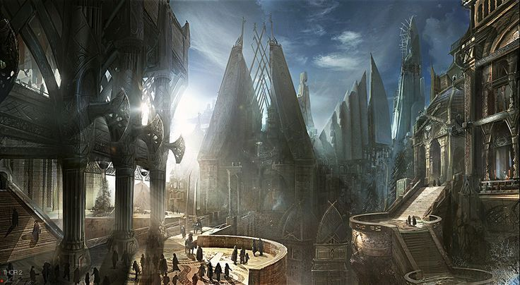

Ventoria City
Population: ~12,500,000
Summary
Ventoria City is the main city of Granvalis Prime, where nearly all excess harvest from the planet is shipped. From there, it is either processed and sent off-world or, more commonly, shipped off-world as raw product. This makes Ventoria one of the few major population centers on the planet—and by far the largest, with many imperial faction leaders residing within its borders.

>